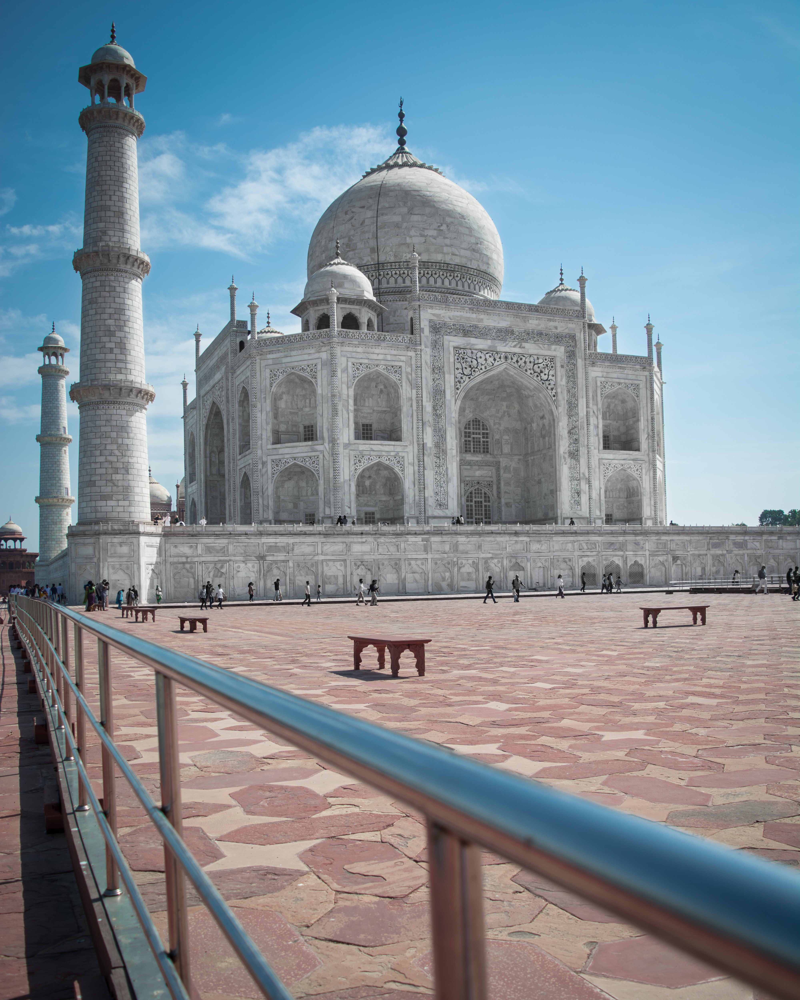
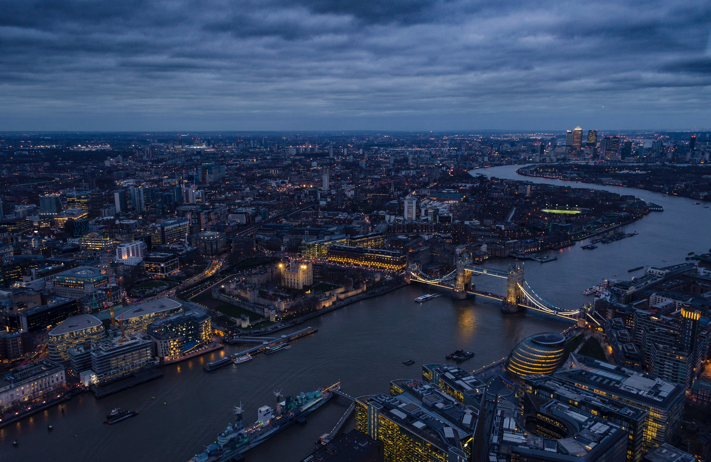

Affordable cities in Europe or Asia are awaiting your visit!
World is full of beautiful cities and places, from worlds biggest democracy "India" to lover state "Paris", or dream cities in South Africa, can be both budget friendly, and over expensive. All you need is proper research, and wise decision making to buy a luxurious trip plan in an unimaginable price.
1. Maldives
The island nation of the Maldives is popular with honeymooners looking for seclusion and adventurers looking to explore the depths of the sea on a scuba diving and snorkeling excursion. Travelers seeking relaxation can unwind at one of the island spas and all visitors should certainly spend a day exploring the Maldivian capital of Malé. The hotels in this region are also spectacular, ranging from underwater hotels to overwater private bungalows. However, getting to and staying in this tropical paradise requires patience (there are no direct flights from the United States) and plentiful cash. Located between the Arabian and Laccadive seas, roughly 500 miles southwest of Sri Lanka, the Maldives is about as isolated as you can get – and that's just another one of its many allures. For best food around the world-Click here!


2. Tokyo
"Animated" is perhaps the best word to describe Tokyo. Crazy about its anime, Japan's mega city is constantly buzzing with movement – feet clacking down sidewalks, cars zooming along streets, subway trains humming below ground, ships cruising in and out. And yet bright lights and loud signs beg you to pause, to break your motion for just one second to pray (oops, we mean pay) at the altar of consumerism. This is a city that feeds on motion and progress.


3. Bali
Shangri-La, Elysium, Arcadia, Utopia and Bali are all synonymous with "heaven." The only difference between them is that you can actually visit Bali. Many travelers have never been to this Indonesian island. Yet, the word "Bali" conjures daydreams of the most fantastical landscape: towering volcanoes wrapped in a deep green canopy, sandy shores that fade into turquoise waters and curving coastlines crowned with staggered pagodas. And believe it or not, Bali rarely disappoints.


4. Kabul
Afghanistan which is at the crossroads of the great civilizations of history has created a surprising variety of food, art, language, and tradition. This diversity is evident in all the cities of Afghanistan. Kabul the bustling capital of Afghanistan is proud of its heritage as the main commercial city between East and West. Today it is the central market in Afghanistan. Although Kabul has undergone major changes with modern buildings and heavy traffic, the bazaars and other monuments of the old town remain the center of life

5.Delhi
Delhi, the capital of India, offers a sedate blend of culture, art and modern architecture. It attracts thousands of tourists every year with its mesmerizing natural scenic wonders and awe inspiring development. It also attracts a sea of professionals who visit the city for official purposes.

6. Paris
The City of Light draws millions of visitors every year with its unforgettable ambiance. Of course, the divine cuisine and vast art collections deserve some of the credit as well. The gentle River Seine rambles through the city, flanked by stately museums, centuries-old churches, and blocks of Rococo- and Neoclassic-design architecture, further enhanced by cascading trees and glowing streetlamps. Peppering the Seine's cobbled walks and graceful bridges are impossibly chic Parisians, probably on their way to the market, cafe or cinema.


7. London
The English writer Samuel Johnson famously said, "You find no man, at all intellectual, who is willing to leave London. No, Sir, when a man is tired of London, he is tired of life; for there is in London all that life can afford." More than two centuries have passed since Johnson's era, but his words still ring true. Life in London is nothing short of invigorating, and travelers find that one visit isn't enough to experience everything this two-millennia-old city has to offer.

8. Santorini
A massive volcanic eruption around 1650 B.C. forced the center of what was then a single island to implode and succumb to the sea. Some say that this was the original home of the lost city of Atlantis, which long ago disappeared into the ocean's depths. Whatever remains of this mythological metropolis is now guarded by beautiful beaches and stately whitewashed homes. Today, Santorini consists of two inhabited islands and several islets. Most visitors spend their time on Thira (the archipelago's largest island), which is home to Santorini's major towns, including Fira and Oia. Sleepy Thirassia makes for a relaxing daytrip too.

9. Toronto
If you enjoy visiting exciting and vibrant cities, you’ll love Toronto, which is also Canada’s largest city and the capital of Ontario. It is also a very cosmopolitan one, where more than 140 languages are spoken. It is, in fact, the most multi-culturally diverse city on the planet. Currently, Toronto is undergoing an urban revitalization, so you’re likely to find many new and stylish neighborhoods rising out of former industrial areas. Plus, you’ll never be bored in Toronto as it attracts numerous big events, including the well-known Toronto International Film Festival. While in Toronto, make sure to check out one of Canada’s most iconic landmarks, the CN Tower, currently the 3rd tallest tower in the world.


10. New York City, NY
Nickname: “The Big Apple” and “The City that Never Sleeps” Why You Should Move: Fast-paced and energetic, New York City is home to many of the world’s most iconic neighborhoods, restaurants, museums and neighborhoods. The Big Apple is also one of the largest cultural and financial hubs in the world. Though real estate in the city is exceptionally expensive, the plethora of amenities and job opportunities make it one of the best places to live in the world.